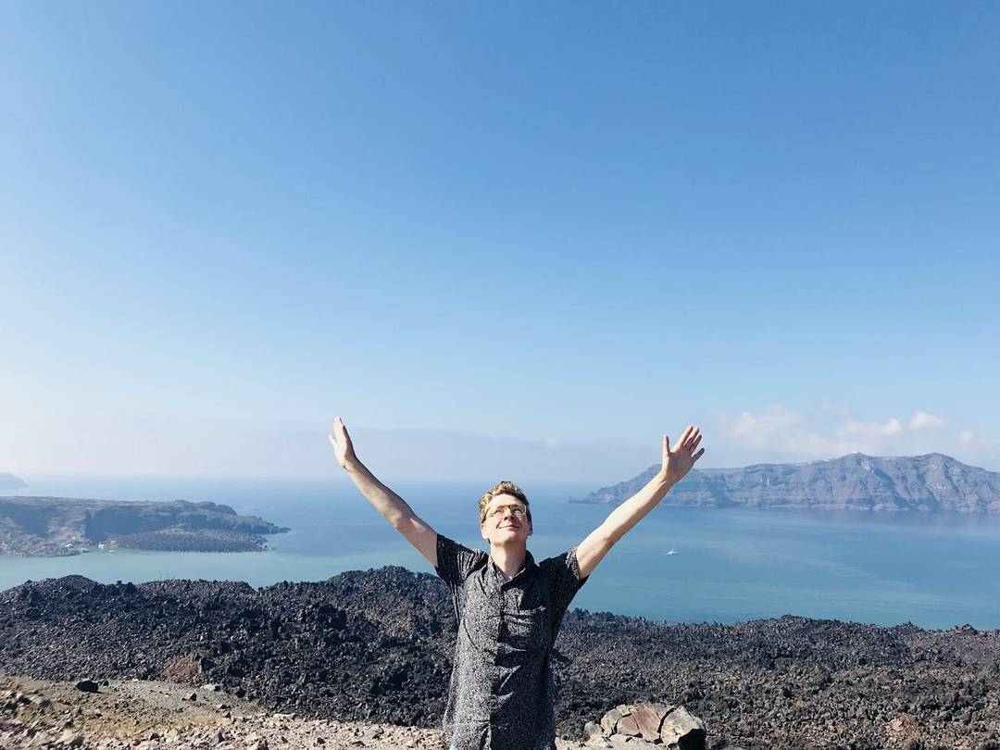
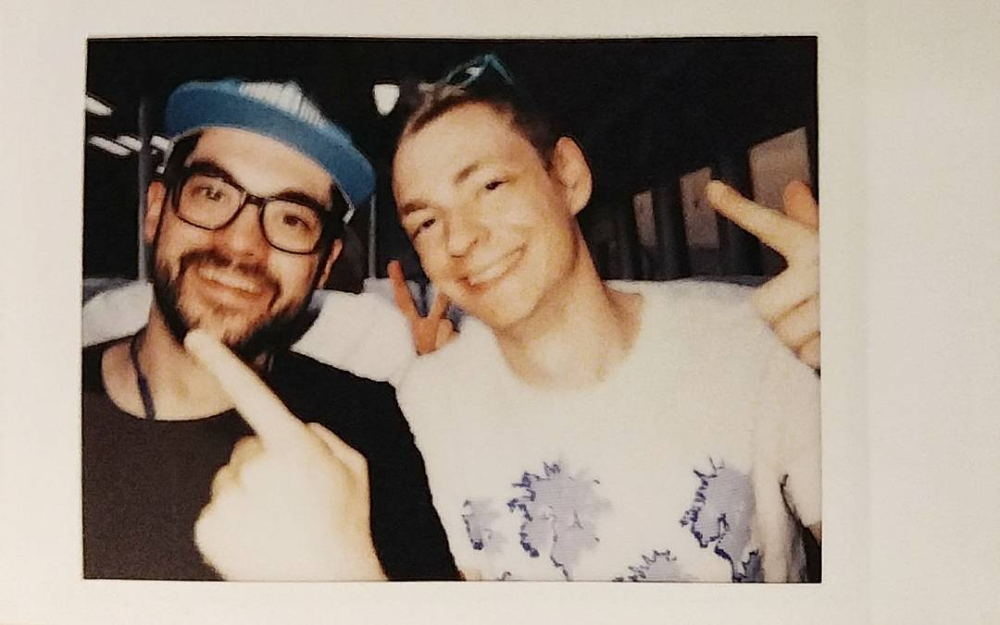

malcolm laing
I make the web a more interactive and exciting place by creating applications for the modern world. I love working with the latest technologies to create modular, testable projects.
I was born in Vancouver, went to university in Victoria, lived in Montréal after university, and moved to Berlin in 2018. I'm passionate about food, travel and photography, and can't wait to see what the future has in store.
JavaScript
what I work with.
- React
- I have been using react now for over three years, and have developed countless single-paged apps with it.
- Redux
- I like the functional style of redux, and the flexibility that it brings. However, I'm looking forward to working directly with the new context api.
- CSS
- I prefer working with styled-components but I'm also happy working with SASS or LESS.
malcolm laing - developer, maker, wanderer.
who I am
An experienced and passionate web developer who thrives on challenge.I'm currently working with trecker.com in Berlin, Germany, helping to digitize agriculture through innovative SaaS solutions.
Before moving to Berlin, I worked with Automotive Data Solutions in Montréal, Québec for two years, creating best-in-class web applications for the automotive sector.
See where my travels have taken me on instagram.

